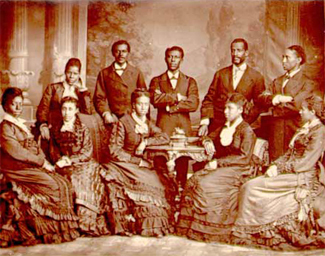

|
Many characteristic elements of African song recurred in Afro-American slave
songs. European traders and travelers in the early seventeenth century described
African singing, which to them seemed exotic and unfamiliar. The music was
typified by strong rhythms accompanied by bodily movement in which everyone
participated. It was characterized by stamping, hand clapping, and other
percussive devices that accented rhythm. Improvised words, frequently derisive
or satiric in nature, and the ubiquitous call-and-response form also marked
African, and Afro-American, songs. Song was commonly used to regulate the rate
of work in rowing, grinding grain, and in the fields. Song also had a major role
in religion, public ceremonies, and other nonsecular aspects of life. Scholars
disagree as to whether harmony was present, but the simultaneous sounding of
more than one pitch was common. Vocal ornaments were frequently employed, and a
strong, rasping voice quality was admired.
Ironically, the transmission of African song, dance, and instruments to the
New World was encouraged by slaving captains who demanded that their captives
sing and dance aboard ship. Slave singing first was reported in the West Indies
and the North American mainland in the mid-seventeenth century. Dance and work
songs were most common. Throughout the antebellum period many work songs and
songs that accompanied dancing shared similar words. Besides the occupations
that had been known in Africa, new forms of work in the New World-such as corn
husking and engine firing-prompted slave songs.

This painting by an unknown artist shows slaves dancing in
their off hours
|
The sacred songs of the slaves, the spirituals, whatever their African
counterparts may have been, appeared after the slaves' gradual conversion to
Christianity, a slow process. Some planters opposed the baptism of their slaves,
believing that baptism might mean freedom or interfere with work. When planters
permitted religious instruction, the Africans responded with enthusiasm. But the
missionaries sent from England were too few to minister to widely separated
plantations and to such a heterogeneous population. In the mid-eighteenth
century, a few Presbyterian ministers led by Samuel Davies of Hanover, Virginia,
made special efforts to convert blacks. Davies reported his black converts'
rapturous singing of psalms and hymns, "enough to bear away the whole
congregation to heaven."
By the late eighteenth century black worshipers joined whites at frontier
protracted meetings. This practice continued throughout the antebellum period,
and without question, the two races regularly worshiped and sang together in an
atmosphere highly charged with emotion. Songs, parts of songs, and ways of
singing were exchanged without the excited folk taking cognizance of derivation.
The call-and-response style of singing especially suited the service of the camp
meeting, where vast numbers of people required musical responses they could
learn on the spot. For whites, it recalled the practice of "lining out"-in which
a leader sang or read two lines of a hymn to the congregation who then repeated
them. This practice was followed in churches with illiterate members and in
congregations with too few books to go around. The camp meeting thus provided an
introduction for both groups to the sound and style of each other's singing.
The earliest reports of black religious song, distinct from European-style
psalms and hymns, date from the early nineteenth century, somewhat earlier than
the first organized program of missions to the slaves. These songs were not
written down until after the Civil War, but contemporary accounts described
musical elements that defied conventional musical notation then and now-notes
outside European scales, the so-called blue notes, glissandos, growls,
polyrhythms, and the overlapping of leader and chorus in the call-and-response
style. All of these elements were characteristic of African musical forms and
were present in the slaves' sacred and secular songs.
Slave songs served various functions in the black community. They provided
comfort in time of sorrow, raised low spirits, passed the time during tedious
tasks, regulated the rate of work, heightened group feeling, and afforded
psychological escape from unbearable conditions. Both sacred and secular songs
could fill these functions, but the bondsmen most valued the spirituals because
of the comfort and inspiration they provided.
The pervasive belief that the slaves shunned secular music and sang only
hymns was derived from the strict evangelical belief that all secular music was
sinful. Frontier sects expected their members to "put away the things of the
world," and their black members dutifully accepted this doctrine. Among
religious slaves, sacred texts were used in work songs to replace secular words.
Along the Atlantic seaboard-from Richmond's tobacco factories to the boats on
the tidal rivers of the Sea Islands-work songs commonly contained religious
words.
Reports by travelers before the Civil War of the singing of blacks usually
were vague, lacked musical detail, and frequently were condescending. Most
educated people of that time simply were unprepared to accept the music of
uneducated people on its own terms. Although the spirituals became widely known
in the South, they were still largely unknown in the North until wartime
conditions brought Northern whites into contact with plantation slaves. The
first spiritual to be published with its music was "Go Down, Moses," under the
title 'The Song of the Contrabands "O Let My People Go," words and music
obtained through the Rev. L. C. Lockwood, Chaplain to the Contrabands at
Fortress Monroe (1862). Newspaper and magazine articles described the songs
in more detail, but the first comprehensive collection was not published until
1867. Slave Songs of the United States, edited by William Francis Allen,
Charles Pickard Ware, and Lucy McKim Garrison, included songs collected by
persons stationed in the South during the war as newspapermen, army officers,
missionaries, teachers, or agents of freedmen's aid societies or the Freedmen's
Bureau. Very few of these collectors were professional musicians, and none of
them knew much about non-European music. But all were capable of writing
melodies in musical notation, and they were painfully aware that the music
included elements that could not be transcribed in conventional notation.
Fortunately, the three editors shared education, skills, and talents that made
them as well qualified as any of their generation for the work of preserving a
music they could not fully understand. Allen, Ware, and Garrison recognized
slave songs as valuable, attractive, and eminently worth preserving from the
hazards of time and historic change.
The public, however, was not ready to appreciate authentic folk music. Some
reviews of Slave Songs of the United States were openly hostile, and even
the most sympathetic critics stressed the curious aspects of the collection.
They could not conceive that these songs were art worthy of appreciation. The
volume sank into oblivion, all but forgotten until the 1930s when the folk song
revival brought it the acclaim it deserved.
|

The Fisk Jubilee Singers
|
More successful in acquainting the public with the spirituals were the Fisk
Jubilee Singers (1871), the Hampton Singers (1872), and other groups that toured
the Northern states and Europe, singing versions designed for concert
performance. These singers were only a few years removed from slavery, but many
had already been trained in European music and its harmony. Their ears were more
or less acclimated to the sound of European choral music and their versions of
slave songs were somewhat removed from folk traditions. How much their versions
diverged from the singing of slaves is still a matter of conjecture. The notated
versions of their songs cannot be a reliable guide in such matters since so many
elements of the performance style could not be transcribed. Moreover, the
musicians who transcribed the songs varied in their experience with the folk
tradition and in their sensitivity to it. Some felt no obligation to make
accurate transcriptions even if that were possible. Yet these transcriptions
were the only form in which the music could be preserved until the development
of sound recording. The public acceptance of these transcriptions as the
equivalent of the music as it was performed contributed to the growth of the
theory that slave songs were based on earlier white originals, a theory once
widely accepted in academic circles. When recordings made available the
performances themselves, the public finally heard Afro-American slave music
without the intermediation of transcribers and arrangers.
Source: Randall M. Miller and John David Smith, eds. Dictionary of
Afro-American Slavery (Westport, CT: Praeger, 1997), 691-94.
|